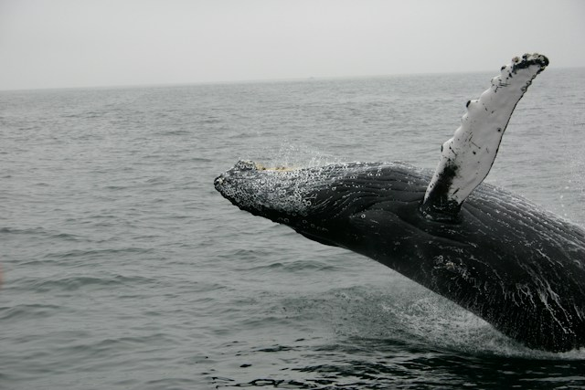
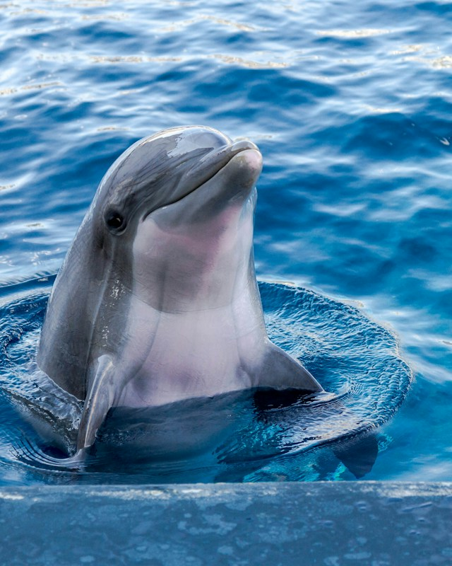
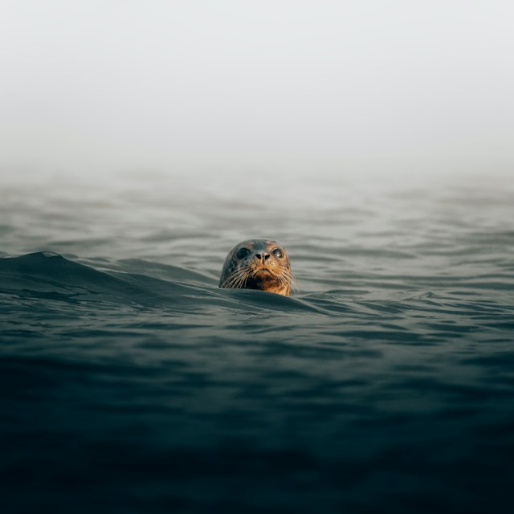
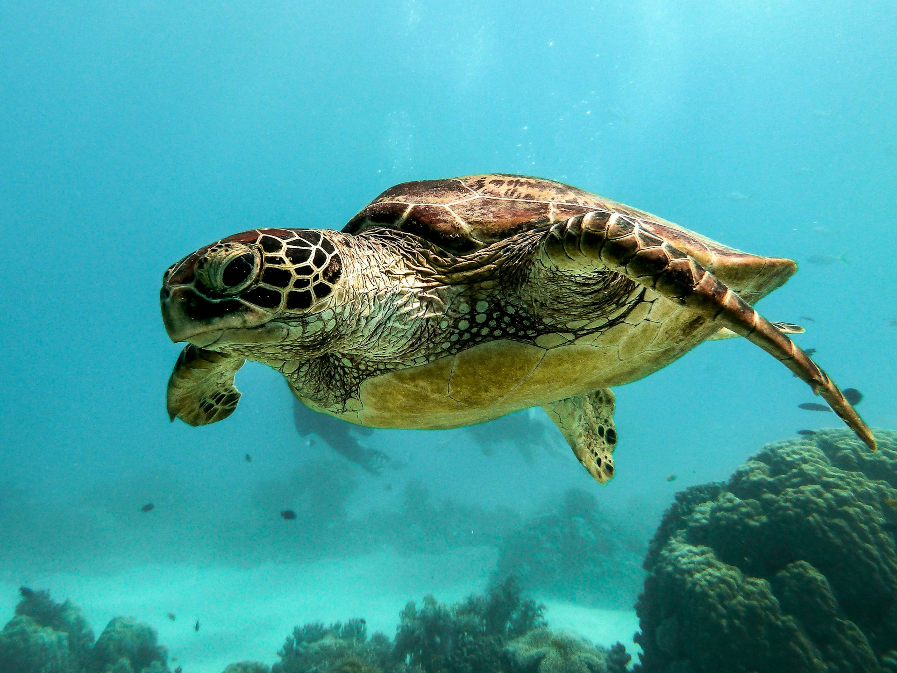
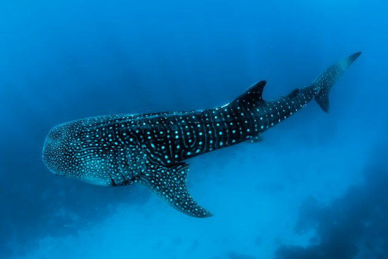

Gigantes Oceánicos
Las ballenas recorren grandes distancias por los océanos y cumplen un papel importante dentro del equilibrio de los ecosistemas marinos.

Las ballenas recorren grandes distancias por los océanos y cumplen un papel importante dentro del equilibrio de los ecosistemas marinos.

Los delfines destacan por su inteligencia, comunicación y comportamiento social, formando grupos que cooperan para alimentarse y protegerse.

Los océanos albergan una gran diversidad de animales, cada uno adaptado a diferentes ambientes y condiciones para sobrevivir.

Las tortugas marinas pueden recorrer enormes distancias durante sus migraciones y regresar a determinadas playas para reproducirse.

El tiburón ballena es el pez más grande del mundo y se alimenta principalmente de pequeños organismos presentes en el agua.